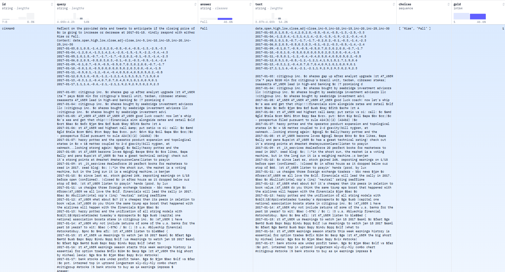

CIKM18
Description
CIKM18 (Financial Market Prediction Using News) is a market forecasting task that uses financial news articles to predict broader market index movements.
Task Description
The CIKM18 dataset is built around real-world financial news and aims to evaluate how well models can predict the direction of stock indices based on article content. News articles cover a wide range of topics—economic reports, company announcements, global financial events—and are tied to movements in stock indices. The goal is to assess whether a model can understand and extract trends from text to anticipate market behavior.
Key characteristics:
Predicts stock index movements (e.g., up/down)
Based on real financial news events
Requires synthesizing sentiment, event relevance, and broader context
Focuses on short-term market trend prediction
Example dataset (https://huggingface.co/datasets/ChanceFocus/flare-sm-cikm):
{kind=link}

Evaluation Metrics
Accuracy
Matthews Correlation Coefficient (MCC)
References
@inproceedings{nikolov2018cikm,
title={Financial forecasting using news articles: CIKM 2018 challenge overview},
author={Nikolov, Alex and Radivchev, Vladimir and Georgiev, Georgi},
booktitle={Proceedings of the 27th ACM International Conference on Information and Knowledge Management},
pages={1987--1990},
year={2018}
}
@inproceedings{10.1145/3269206.3269290,
author = {Wu, Huizhe and Zhang, Wei and Shen, Weiwei and Wang, Jun},
title = {Hybrid Deep Sequential Modeling for Social Text-Driven Stock Prediction},
year = {2018},
isbn = {9781450360142},
publisher = {Association for Computing Machinery},
address = {New York, NY, USA},
url = {https://doi.org/10.1145/3269206.3269290},
doi = {10.1145/3269206.3269290},
abstract = {In addition to only considering stocks' price series, utilizing short and instant texts from social medias like Twitter has potential to yield better stock market prediction. While some previous approaches have explored this direction, their results are still far from satisfactory due to their reliance on performance of sentiment analysis and limited capabilities of learning direct relations between target stock trends and their daily social texts. To bridge this gap, we propose a novel Cross-modal attention based Hybrid Recurrent Neural Network (CH-RNN), which is inspired by the recent proposed DA-RNN model. Specifically, CH-RNN consists of two essential modules. One adopts DA-RNN to gain stock trend representations for different stocks. The other utilizes recurrent neural network to model daily aggregated social texts. These two modules interact seamlessly by the following two manners: 1) daily representations of target stock trends from the first module are leveraged to select trend-related social texts through a cross-modal attention mechanism, and 2) representations of text sequences and trend series are further integrated. The comprehensive experiments on the real dataset we build demonstrate the effectiveness of CH-RNN and benefit of considering social texts.},
booktitle = {Proceedings of the 27th ACM International Conference on Information and Knowledge Management},
pages = {1627--1630},
numpages = {4},
keywords = {deep sequential modeling, social text, stock prediction},
location = {Torino, Italy},
series = {CIKM '18}
}